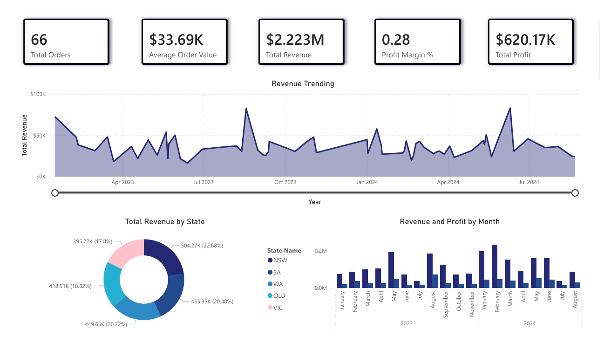

Australian Sales Analytics
Project Goal: Analyse Australian sales performance and deliver an executive-ready Power BI dashboard with reliable KPIs, trend analysis, and regional/product insights.
This project demonstrates end-to-end analytics using SQL, Power Query, data modelling, and Power BI, with strong emphasis on data quality and metric validation.
Key Insights
- NSW generated the highest revenue share, contributing approximately 40% of total sales.
- Sales growth accelerated significantly during Q3, driven by selected product categories.
- Several low-volume products showed high margins, indicating upsell opportunities.
- Data quality checks prevented KPI inflation caused by duplicated transactions.
Dashboard Preview

Problems Addressed: Raw sales data contained inconsistent date formats, missing region mappings, duplicated transactions, and unclear metric definitions, making it difficult for stakeholders to trust reported KPIs and identify true performance drivers.
Links
-
Repository
View code, SQL scripts, and documentation
Tech Stack
-
Power BI — dashboards, KPI cards, trend analysis
-
DAX — measures, time intelligence, KPI validation
-
Power Query — ETL, data cleaning, transformations
-
SQL — extraction, validation queries, aggregations